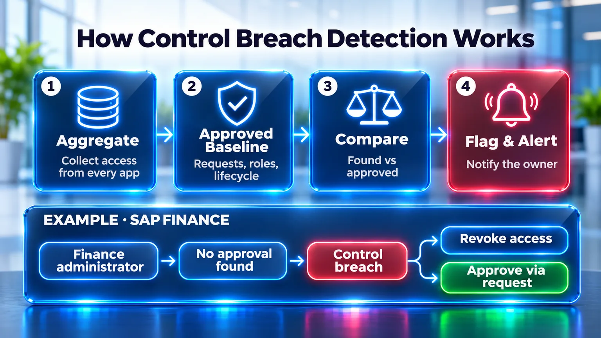

What Is a Control Breach?
In identity governance, a control breach is any access that exists in an application but was not granted through the governance process. There is a gap between "who should have access", which is what the governance system approved, and "who actually has it", which is what the application holds today.
Common examples include:
- Direct group changes: a user is added to an Active Directory group or an application role by an administrator, without a request.
- Local accounts: an account is created inside an application, outside the identity lifecycle, so it is not linked to any person.
- Elevated permissions: a user's access inside an application is raised, for example from viewer to administrator, directly in the application's admin console.
- Re-enabled accounts: an account that was disabled when someone left is turned back on without going through the joiner or rehire process.
Not every control breach is malicious. Many are well-intended shortcuts. But each one is access with no approval, no owner on record and no audit trail, which is exactly what auditors and attackers look for.
Why Access Changes Happen Outside the Governance Process
Out-of-process changes are rarely a sign that people are ignoring the rules. They usually happen because the direct route is faster or is the only route available. These are the five most common causes.
1. Urgent Fixes and Emergency Access
A production issue at 2 a.m. does not wait for a three-level approval. An administrator grants the access needed to fix it, the issue is resolved, and the access is never removed or recorded. Emergency access is a legitimate need, but without a follow-up it becomes permanent, unapproved access.
2. Application Admin Consoles Are Still Open
Bringing an application under governance does not remove its own admin console. Application administrators can still add users, change roles and create accounts directly. Unless that access is restricted, and changes made there are checked, the governance process can be bypassed with a few clicks.
3. Applications That Are Not Fully Onboarded
Many organisations govern their main applications well but still manage older or home-grown systems by email and spreadsheet. Access to these systems is granted by whoever runs them. If the governance system does not know what access these applications hold, it cannot tell approved access from unapproved access.
4. Vendors and Support Teams
External vendors and support partners often have administrative rights to the systems they maintain. During an upgrade or a support call, they may create accounts or change permissions to get the job done. These changes are made in good faith, but they sit entirely outside the organisation's own request and approval process.
5. Migrations and Restructuring
When applications are migrated, merged or restructured, access is often copied in bulk by scripts. Groups are recreated, permissions are mapped across, and extra access is added "just in case". The result can be hundreds of entitlements that nobody requested and nobody approved.
Why Access Reviews Alone Miss Control Breaches
Access certification is an essential control, but it is periodic. If reviews run every quarter, access added directly in an application the day after a review can stay in place for almost three months before anyone is asked about it. If reviews run every six months, the gap is twice as long.
Reviews can also miss these changes altogether. A reviewer looking at a long list may not notice that one entitlement was never requested, and accounts that are not linked to any person do not appear in identity-based reviews at all. We cover these problems in more detail in our article on why access reviews get rubber-stamped.
Control breach detection fills this gap. Instead of waiting for a reviewer to notice, it checks actual access against approved access every time access data is collected.
How Control Breach Detection Works
Detection follows the same four steps regardless of the application. Each step depends on the one before it.

1. Aggregate Actual Access From Every Application
The first step is to collect the current accounts and entitlements from each application: who has an account, which groups and roles they hold, and which permissions come with them. This is called aggregation. It should run automatically and on a schedule, through connectors to each application or through imports for systems that cannot be connected directly. Detection is only as complete as the aggregated data, so applications that are not aggregated cannot be checked.
2. Know the Approved Baseline
The baseline is the access that the governance process approved. It includes access granted through access requests and approvals, access that comes with a role, access assigned automatically when someone joins or moves, and exceptions that were formally accepted. Every item in the baseline has a reason and a record behind it.
3. Compare Actual Access With the Baseline
Each aggregation is compared with the baseline. Access that appears in both is expected. Access that appears in the application but not in the baseline is a control breach: it was added outside the process. The comparison also finds the opposite case, where approved access is missing from the application, which usually means a provisioning step failed.
4. Flag the Breach and Alert the Right People
Each difference is flagged as a control breach and sent to the people who can act on it, usually the application owner and the security or compliance team. The alert should say what changed, on which account, in which application, and when it was found. A breach that is flagged but never seen is no better than one that was never detected.
What to Do When a Control Breach Is Found
Finding a breach is the start, not the end. A clear, repeatable response turns detection into a control that auditors can rely on.
- Check who made the change and why: confirm the account, the access and the person who granted it. Many breaches have a simple explanation, such as an urgent fix.
- Decide: remove or approve: if the access is not needed, revoke it. If it is needed, raise an access request so it goes through the normal approval and becomes part of the baseline.
- Remove access in the application, not just on paper: revocation should go through a connector or, for applications without APIs, a ticket that is tracked until it is complete.
- Check for policy conflicts: access added outside the process skips the usual segregation of duties (SoD) checks, so run them against the new access too.
- Fix the root cause: if the same application or administrator causes repeated breaches, restrict admin console access or bring the application fully under governance.
- Keep the record: log what was found, who decided, what was done and when. That record is your audit evidence.
Without vs With Control Breach Detection
| Area | Without detection | With detection |
|---|---|---|
| Visibility | Only access granted through requests is known | All access in connected applications is known |
| Time to find | At the next access review, or during an audit | At the next aggregation, often within a day |
| Direct admin changes | Go unnoticed | Flagged as control breaches |
| SoD conflicts | Can be introduced without any check | Checked when the breach is investigated |
| Response | Ad hoc, if anyone notices | Revoke or approve, with each decision recorded |
| Audit evidence | Access with no approval found by the auditor | Breaches found, resolved and documented by you |
Control Breach Detection and RBI, SEBI, IRDAI and ISO 27001 Audits
Auditors rarely ask whether you have an access request process. They ask whether it is the only way access gets granted. A common audit test is to sample accounts from an application and ask for the approval behind each one. Any access without an approval becomes a finding.
RBI, SEBI's Cybersecurity and Cyber Resilience Framework (CSCRF) and IRDAI all expect regulated entities to control how user access is granted, changed and removed, and to review it regularly. ISO/IEC 27001 (Annex A control 5.18) expects access rights to be provisioned, reviewed, modified and removed in line with the organisation's access control policy. Control breach detection supports all of these by showing that changes made outside the approved process are found and dealt with, rather than discovered by the auditor. We cover the regulator view in more detail in our article on RBI, SEBI and IRDAI audit preparation.
What to Look for in a Control Breach Detection Tool
If you rely on manual exports and spreadsheets to compare access, an Identity Governance and Administration (IGA) platform can automate the work. When evaluating one, check whether it can:
- Aggregate accounts and entitlements automatically from connected applications, including very large ones
- Connect to custom and home-grown applications, not just common SaaS platforms
- Keep a complete record of approved access from requests, roles and lifecycle events
- Compare actual access with approved access after each aggregation
- Flag differences and alert the application owner and security team
- Run SoD checks against existing access, not only at request time
- Revoke access through connectors, with a ticketing fallback for applications without APIs
- Report on orphan accounts that are not linked to any person, and dormant accounts that are no longer used
- Export an audit trail of every breach and the decision taken on it
Final Considerations
A governance process only controls the access that goes through it. Control breach detection closes the gap between "who should have access" and "who actually has it" by checking the second against the first, continuously, and making sure every difference gets a decision. Combined with regular access reviews, it means unapproved access is found in days rather than at the next audit.
IamLogic IGA checks for control breaches each time it aggregates accounts from an application. It compares every account with what IGA recorded on the previous run and lists each change it finds, such as an account created or deleted, or an entitlement or permission assigned or removed, on its Control Breach screen. Breaches can be filtered by identity, application, resource type and breach type, and each one is marked Synced or Unsynced, so administrators can see which still need review.
IGA connects to custom applications through its Python connector framework, and keeps a full request-to-grant audit trail of the access it approves and provisions. Detective SoD scans check existing access for conflicts. Orphan account reports show accounts that are not linked to anyone. When access needs to be removed, revocations are carried out through connectors or, for applications without APIs, through ticketing workflows such as Zoho Desk, with IGA tracking each ticket through to completion. Audit trail, identity history and access reports support reviews for DPDP, RBI, SEBI, IRDAI and ISO/IEC 27001 requirements.